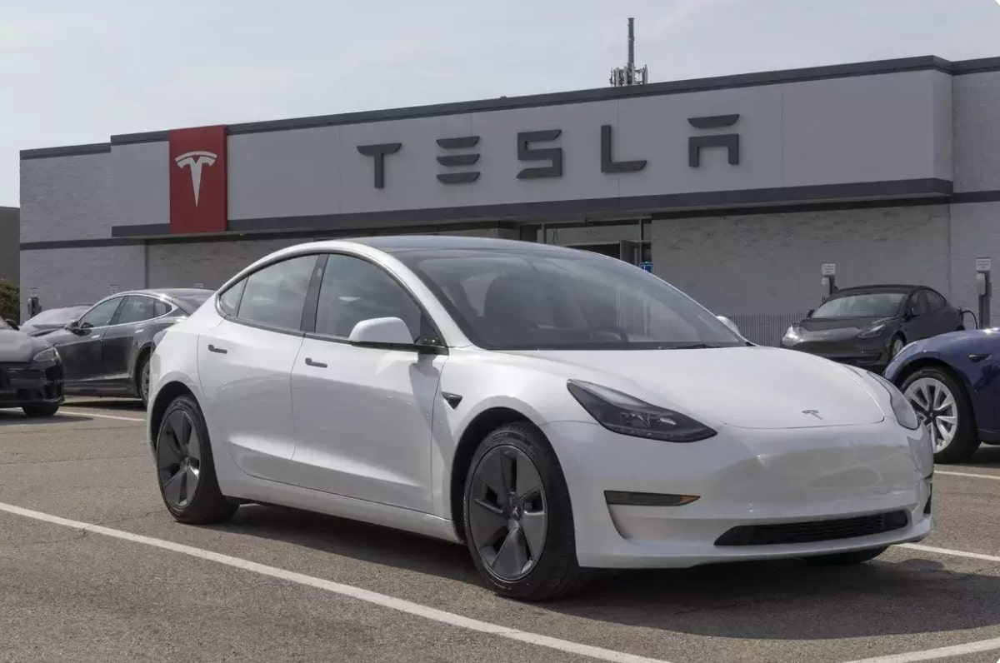
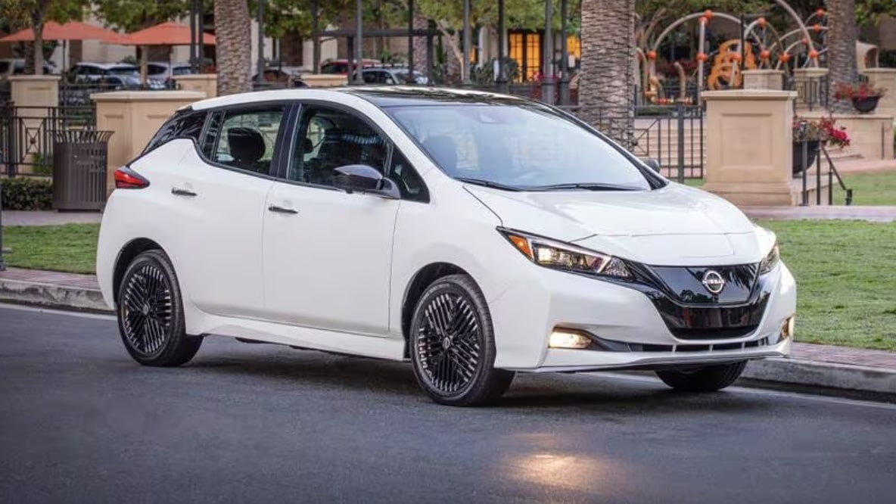
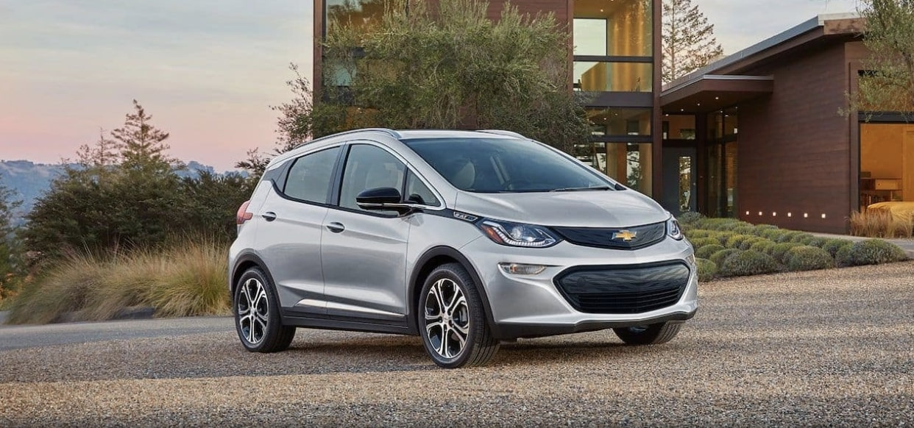
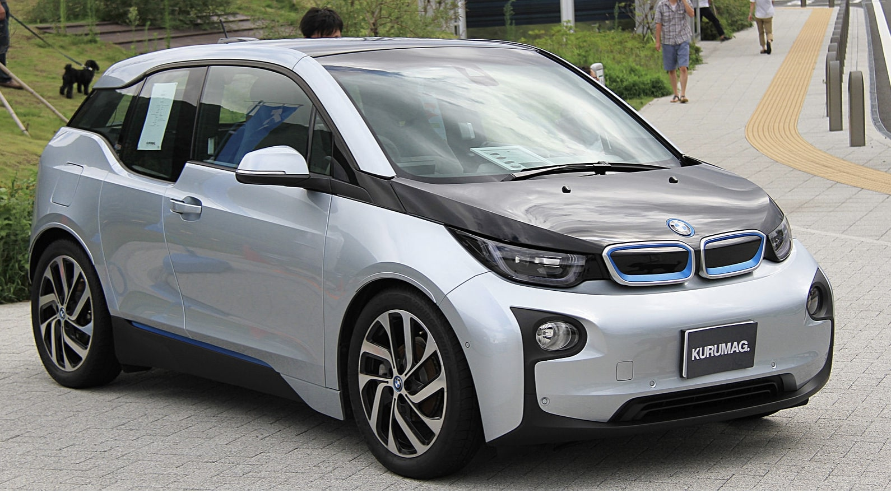

Efficiency of Electric Vehicles in Controlling Environmental Pollution
About Us
Welcome to the world of innovation and sustainability at the forefront of Electric Vehicles and Environmental Efficiency! We are a passionate group of 1st-year Computer Science Engineering students from Lovely Professional University (LPU), driven by the desire to make a positive impact on our environment through cutting-edge technology.
As budding engineers, we recognize the pivotal role that technology plays in addressing global challenges, and we have chosen to focus our skills on the efficiency of electric vehicles and their contribution to controlling environmental pollution.
Our mission is clear – to explore, understand, and communicate the importance of electric vehicles in creating a cleaner, greener future. Through this HTML project, we aim to showcase the various aspects of electric vehicle efficiency and how it aligns with the principles of environmental preservation and sustainable development.
Why Electric Vehicles? That's the question we're excited to answer. Our project dives into the benefits of electric vehicles, their impact on reducing greenhouse gas emissions, improving air quality, and their role in promoting a more sustainable and eco-friendly transportation ecosystem.
Join us on this journey as we navigate the world of code and environmental consciousness. Together, let's explore the intersection of technology and environmental stewardship, paving the way for a cleaner, healthier planet.
Importance of Electric Vehicle Efficiency
The efficiency of electric vehicles plays a crucial role in addressing environmental concerns and shaping a sustainable future. Here are some key reasons why it is important:
Environmental Preservation: Electric vehicles contribute to the reduction of environmental pollution, helping to preserve ecosystems and biodiversity.
Climate Change Mitigation: By minimizing greenhouse gas emissions, electric vehicles actively participate in global efforts to mitigate climate change and its adverse effects.
Health Benefits: The improved air quality resulting from electric vehicles reduces the health risks associated with air pollution, particularly respiratory diseases.
Resource Conservation: Electric vehicles promote the efficient use of resources, including energy, by leveraging advanced technologies and renewable energy sources.
Technological Advancement: The development and adoption of electric vehicles drive technological innovation, fostering a more sustainable and technologically advanced transportation sector.
Reduced Greenhouse Gas Emissions: Traditional vehicles emit greenhouse gases contributing to climate change. EVs produce zero tailpipe emissions, reducing direct air pollution and mitigating their impact on the greenhouse effect.
Reduced Dependence on Fossil Fuels: EVs help decrease dependence on finite fossil fuel resources. As the electricity grid becomes greener, the overall environmental impact of EVs continues to improve with the integration of renewable energy sources.
Air Quality Improvement: EVs contribute to better air quality, especially in urban areas, by not emitting pollutants like nitrogen oxides and particulate matter, which can have detrimental effects on respiratory health.
Resource Efficiency: EVs are generally more energy-efficient than traditional vehicles, converting a higher percentage of electrical energy from the grid to power at the wheels, making better use of energy resources.
Promotion of Renewable Energy: The adoption of EVs can drive the demand for renewable energy sources such as solar and wind power, making the entire lifecycle of these vehicles more environmentally friendly.
Incentives for Sustainable Practices: The rise of EVs encourages innovation and investment in renewable technologies and sustainable practices, incentivizing governments and businesses to develop cleaner energy solutions and infrastructure.
Noise Pollution Reduction: EVs are generally quieter than traditional vehicles, contributing to a reduction in noise pollution in urban areas, with positive implications for both the environment and public health.
Job Creation and Economic Opportunities: The shift towards EVs can stimulate economic growth by creating jobs in manufacturing, research, development, and maintenance of electric vehicles and their associated infrastructure.
Long-term Cost Savings: While the initial cost of purchasing an EV may be higher, the operational and maintenance costs are often lower than those of traditional vehicles, making EVs an attractive option in the long run.
Global Environmental Impact: The widespread adoption of EVs can contribute to a global reduction in carbon emissions, helping countries meet their climate goals and mitigate the impact of climate change.
Understanding the importance of electric vehicle efficiency is key to realizing the full potential of sustainable transportation and creating a positive impact on both the environment and human well-being.
Benefits of Electric Vehicles
Electric vehicles (EVs) offer several environmental benefits, contributing to a sustainable and healthier future:
Reduced Greenhouse Gas Emissions:
Traditional Vehicles: Conventional internal combustion engine vehicles burn fossil fuels, releasing greenhouse gases (GHGs) such as carbon dioxide (CO2) into the atmosphere.
Electric Vehicles: EVs operate on electricity stored in batteries, producing zero tailpipe emissions and eliminating direct CO2 emissions during operation.
Improved Air Quality:
Traditional Vehicles: Combustion of fossil fuels in traditional vehicles releases pollutants into the air, including nitrogen oxides (NOx) and particulate matter, contributing to smog formation and respiratory problems.
Electric Vehicles: EVs do not emit tailpipe pollutants, contributing to better air quality, especially in urban areas. This has direct health benefits, reducing the risk of respiratory diseases and improving overall well-being.
Decreased Dependence on Fossil Fuels:
Traditional Vehicles: Conventional vehicles rely on finite fossil fuel resources, contributing to resource depletion and geopolitical challenges associated with oil dependence.
Electric Vehicles: EVs reduce dependence on fossil fuels as they can be powered by a diverse range of energy sources. As the energy grid incorporates more renewables, the overall environmental impact of EVs becomes increasingly sustainable.
Energy Efficiency:
Traditional Vehicles: Internal combustion engines are inherently less efficient in converting fuel energy to vehicle movement, leading to energy waste and higher emissions per unit of energy.
Electric Vehicles: EVs are generally more energy-efficient. They convert a higher percentage of electrical energy from the grid to power at the wheels, resulting in less energy waste and lower overall environmental impact.
Promotion of Renewable Energy:
Traditional Vehicles: The use of traditional vehicles does not directly contribute to the promotion of renewable energy sources.
Electric Vehicles: The adoption of EVs can drive the demand for clean energy sources such as solar, wind, and hydroelectric power. As the electricity used to charge EVs comes from cleaner sources, the entire lifecycle of these vehicles becomes more environmentally friendly.
Electric Vehicle Models
Explore some of the popular electric vehicle models that are making waves in the market:
Tesla Model S

The Tesla Model S is a high-performance electric sedan known for its sleek design, impressive range, and cutting-edge technology.
Nissan Leaf

The Nissan Leaf is a compact electric hatchback that offers a practical and efficient driving experience, perfect for urban commuting.
Chevrolet Bolt EV

The Chevrolet Bolt EV is a versatile electric vehicle with a spacious interior and a competitive electric range, making it suitable for various lifestyles.
BMW i3

The BMW i3 is a stylish and compact electric car that combines sustainable materials with advanced technology for an eco-friendly driving experience.
Contact Us
We're here to assist you! Whether you have questions about your courses, need academic guidance, or want to connect with your fellow students, feel free to reach out using the information below:
Email: csefirstyear@lpu.edu
Phone: +91 6398358689
Connect with us on social media to stay updated on the latest news and events:
We look forward to supporting you in making your first year at LPU a memorable and successful experience!
Conclusion
In the era of environmental consciousness, the efficiency of electric vehicles stands as a beacon of hope and progress. As we navigate the challenges posed by traditional transportation methods, electric vehicles emerge as a transformative solution to control and mitigate environmental pollution.
The reduction of greenhouse gas emissions, improved air quality, and decreased dependence on finite fossil fuels mark the beginning of a new chapter in sustainable mobility. Electric vehicles not only represent a technological advancement but a commitment to fostering a cleaner and healthier planet for generations to come.
By promoting renewable energy, incentivizing sustainable practices, and contributing to global environmental goals, electric vehicles showcase a harmonious coexistence between modern transportation and ecological well-being. The silence of their motors echoes a promise – a promise of a future where urban streets are free from noise pollution, and our air is pure and breathable.
As we embrace electric vehicles, we embark on a journey towards a more sustainable and eco-friendly world. Join us in this revolution, where every charge fuels not just a vehicle but also the collective effort to preserve and protect our environment for a brighter and cleaner tomorrow.